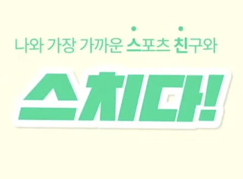

사람들이 필요로 하는 것을 깊이 이해하고,
열린 마음과 수용적인 태도로 고민하는 웹 개발자 윤규보입니다.
회사별 지원동기
- 지원동기 지원동기 지원동기 지원동기 지원동기 지원동기 지원동기 지원동기 지원동기 지원동기 지원동기 지원동기 지원동기 지원동기 지원동기 지원동기 지원동기 지원동기 지원동기 지원동기 지원동기 지원동기
효율적인 시스템 설계를 고민하는 개발자
- 사용자 중심의 서비스를 고민하며, API 설계, 데이터베이스 최적화, 서버 성능 개선을 통해 안정적이고 확장 가능한 시스템을 구축하는 데 집중합니다.
완성 이후에도 개선을 고민합니다.
- 단순한 기능 구현에 그치지 않고, 지속적인 개선과 최적화를 중요하게 여깁니다.
- API 요청 로직 최적화를 통해 유지보수성을 높였고, CI/CD 구축과 자동화를 통해 개발 효율성을 향상시켰습니다.
- 새로운 기술을 학습하고 실무에 적용하여, 더 나은 성능과 사용자 경험을 제공하기 위해 노력합니다.
Skills
- Language: HTML, CSS, JavaScript (ES6+ / Node.js with Express), Python (Flask),PHP
- Database: MySQL, MongoDB
- Infra & DevOps: AWS, CI/CD (GitHub Actions)
- Tools: Github, Slack, Notion, Miro
Work Experience

(주)스마트디아그노시스
R&D 연구원 | Web Developer
2023.01 - 2024.10
"AI감독관과 함께하는 실시간 온라인 시험 솔루션"
TestWith 서비스 Link↗
AI 기반 온라인 시험 솔루션 및 진단 플랫폼 개발을 담당하며 서버
최적화, 보안 강화, 클라우드 인프라 구축, 실시간 기능 개발을
수행했습니다.
서버 통합 및 성능 최적화
- Node.js와 Python Flask 서버를 통합하여 성능 개선
- 중복 코드 제거 및 API 호출 로직 최적화로 HTTP 요청/응답 속도 향상
- 운영 비용 절감 및 유지보수 효율성 50% 향상
트러블슈팅 및 채팅 시스템 개선
- 기존 WebSocket 기반 채팅을 Socket.IO로 전환하여 안정성과 성능 개선
- 서버 오토스케일링 시 발생한 메시지 동기화 문제 해결 (TalkPlus API 도입 → 메시지 누락 0%)
보안 강화 및 데이터 최적화
- SQL Injection 취약점 해결 및 파라미터화된 쿼리 적용 → 보안성 강화
- 중복 쿼리 제거 및 최적화를 통해 서버 성능 개선
UI/UX 개선 및 사용자 경험 향상
- 시험장 입장 화면 개편, A/B 테스트를 통한 최적 UI 도출 → 사용자 이탈률 80% 감소
- 안내 문구 추가 및 절차 단순화로 사용자 혼란 감소
-
UI 홈페이지 디자인 업데이트
- 디자인 확정 전에 발생할 수 있는 개발 공백 시간을 최소화하고, 팀원들이 더 효율적으로 작업할 수 있도록 miro, figma를 사용해 각 페이지 디자인을 미리 작업했습니다. 이를 통해 구조화된 디자인 시스템을 마련하여, 팀원들이 디자인 방향성을 명확히 이해하고 UI 개발 생산성을 크게 향상시킬 수 있었습니다.
AWS 인프라 구축 및 자동화
- EC2, RDS, S3, CloudFront 기반의 클라우드 환경 구축 및 운영
- Cloud-init, PM2를 활용한 자동 기동 스크립트 개발 → 서버 중지 방지
AI 기능 및 자동화 도입
- ChatGPT API를 활용한 자동 채점 기능 개발
"한국능률협회 인터넷강의 및 진단플랫폼"
KMA 서비스 Link↗
UI/UX 유지보수 및 기능 개선을 총괄하며, 사용자 경험 향상을
위한 최적화를 수행하였습니다. 또한, 클라이언트 요구 사항을
반영하여 플랫폼의 안정성과 확장성을 고려하며 운영을
담당했습니다.
플랫폼 구축 및 유지보수
- HTML, CSS, JavaScript를 활용한 UI/UX 개선
- Flask 기반 서버 운영 및 데이터베이스 설계 (AWS RDS)
AWS 환경 최적화 및 자동화
- Cloud-init, PM2를 활용한 자동 기동 스크립트 개발 → 서버 가동 안정성 확보
- CloudFront 및 S3를 활용한 정적/동적 컨텐츠 배포
데이터 보안 및 성능 최적화
- MySQL 기반 데이터 저장소 설계 및 최적화
- 영상, 파일 업로드/다운로드 기능 구현 (AWS S3 활용)
Projects

스치다
Backend Developer
2022.04 - 2022.06

"위치 기반 운동 친구 매칭 서비스"
-
사용자 간 원활한 커뮤니케이션을 위한 메시징 시스템 구축
- Socket.io와 WebSocket을 활용하여 실시간 알림 및 채팅 기능 개발
- 메시지 수신 시 실시간 알림 전송 및 비동기 처리 최적화
실시간 알림 및 채팅 기능 구현
- JWT 및 Passport를 사용하여 소셜 로그인 기능 구현 (카카오, 구글)
백엔드 API 설계 및 인증 시스템 개발
- EC2, Auto Scaling, RDS, Route53, ACM을 활용한 서버 환경 구성
- GitHub Actions 기반 CI/CD 파이프라인 구축 → 배포 자동화 및 운영 효율성 향상
AWS 클라우드 인프라 구축

Education
한국방송통신대학교
2023.09 - 재학 중항해99
2022.03 - 2022.06Certification
-
정보처리산업기사
(2024.09.10) -
SQLD
(2024.09.20)